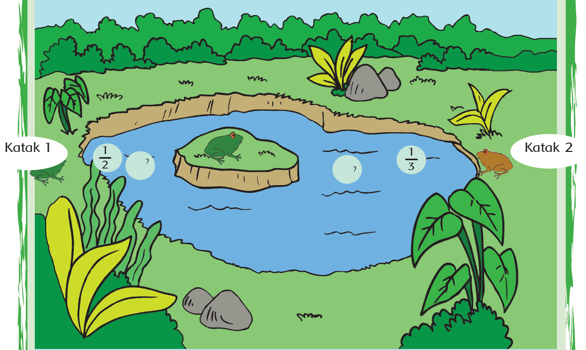
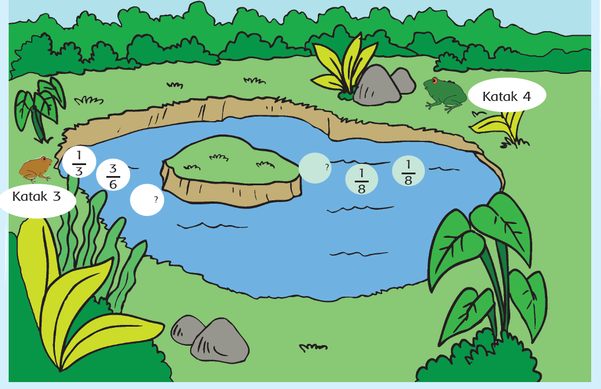

ayo berlatih
Edo juga ingin belajar pecahan dengan bermain lompat katak. Bantulah Edo memecahkan
cerita ini.
Dua ekor katak masing-masing harus melompati dua daun teratai agar tiba di
daratan kecil di tengah kolam. Masing-masing katak itu harus mengumpulkan
pecahan-pecahan agar jumlahnya 1. Lengkapi satu pecahan lagi agar kedua katak
itu dapat mencapai daratan di tengah kolam.

Jawablah dengan caramu sendiri!
Dua ekor katak masing-masing harus melompati dua daun teratai agar tiba di daratan kecil di tengah kolam. Masing-masing katak itu harus mengumpulkan
pecahan-pecahan agar jumlahnya 1. Lengkapi satu pecahan lagi agar kedua katak itu dapat mencapai daratan di tengah kolam

Jawablah dengan caramu sendiri!
Bagaimana caramu melengkapi pecahan daun teratai yang harus dilompati katak 1?
Bagaimana caramu melengkapi pecahan daun teratai yang harus dilompati katak 2?